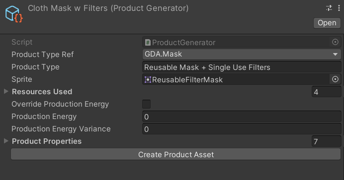
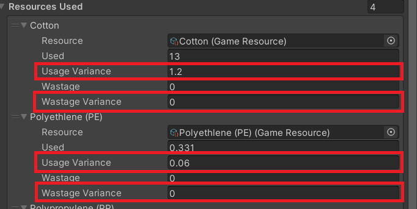
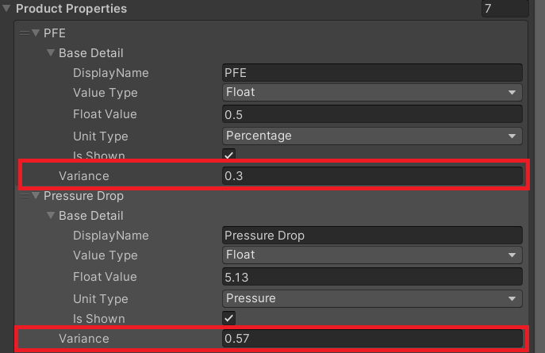

The Product Generator Scriptable Object
Because a Product can be rather complicated, it would be difficult to predefine every product that may appear in the game. Moreover, using predefined products may be detrimental to the replayability to the game. Generating new products using a base/template solves both these issues, and the product generator does exactly that.

A Product Generator is comprised of:
Prouduct Type Ref- The class/family that the product belongs to. This is mainly to ensure the comparability of two products. (e.g. A surgical mask and a cloth masks are different products but are comparable because they are both masks, while a fridge)
Note
A new product type can be added to the game by creating a new class inheriting the Product base class.
Product Type- the text that is shown in-game to the playerSprite- the image that depicts the products of this typeOverride Production Energy- whether generated products should use calculated values for production energy, or override the value with a predefined oneProduction Energy- the average energy required to manufacture products generated by this generatorProduction Energy Variance- the variance of the energy required to manufacture products generated by this generatorProduct Properties- other relevant details to be generated in the product.
The Product Generator is very similar to a Product, with the main difference being that Product Generators also records the variance by which to generate products.

